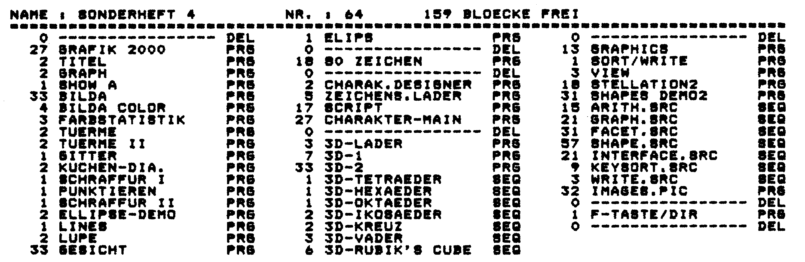

Directory dreispaltig gedruckt
Besitzer eines Epson-kompatiblen Druckers können ihre Disketten-Directorys nun dreispaltig zum Aufkleben für die Diskettenhülle ausdrucken.
Es ist immer das gleiche: Disk rein – Disk raus. Man sucht ein bestimmtes Programm auf irgendeiner Diskette, und es vergeht geraume Zeit, bis man fündig wird. Hilfe soll dieses Programm bringen, das den Disketteninhalt in komprimierter Schrift so auf ein Papier bringt, daß man es anschließend nur noch auszuschneiden braucht und mit Kleber auf die Diskettenhülle aufpunktet (Bild 1).

152 Einträge, mehr passen auch nicht auf eine Diskseite, lassen sich damit ausdrucken. Dieses Programm läuft auf Epson- und Star SG 10/15-Druckern mit Görlitz-Interface und auch über die Centronics-Schnittstelle, zum Beispiel Eyssele-Schnittstelle.
Für das Wiesemann- und Data-Becker-Interface ist Zeile 470 in »OPEN 1,4,1« umzuändern. Die Bedienung des Programms (Listing 1) erklärt sich von alleine. Der Drucker ist vorher einzuschalten, ansonsten kommt in Zeile 490 eine Fehlermeldung.
(Klaus Grabietz/bs)